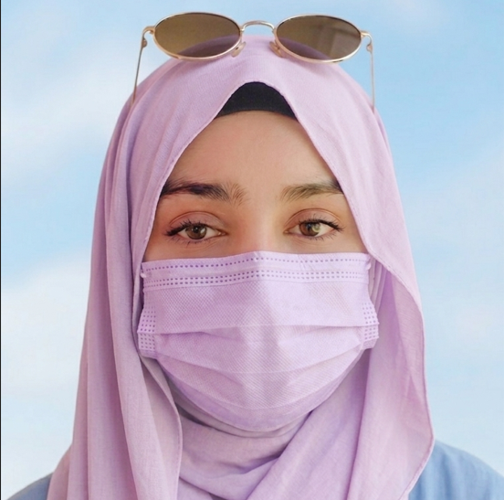

Alishba Arshad – BSCS student at Fatima Jinnah Women University (3rd Semester). Strong interest in Cybersecurity and ethical software development. I believe in combining technical depth with professional responsibility.
Course Expectations: To understand real-world professional practices, ethical frameworks, and develop a strong career roadmap in cybersecurity. I aim to bridge academic knowledge with industry standards.
Career Interest: Cybersecurity
As a 3rd semester student without formal industry experience, I gained insights through online webinars, Coursera courses, and university sessions.
What I Learned from Webinars: The Defense Day Webinar (FJWU CBS) emphasized ethical social media use and digital literacy. The Creative Leadership Conference highlighted that leadership is about initiative and continuous improvement.
New Insights: From Coursera's "Professional Development" course, I learned that adaptability, communication, and ethics are as important as technical skills in the IT industry.
Skills Required in Real-World Jobs: Ethical judgment, digital literacy, lifelong learning, teamwork, and clear communication. I am building these through university projects, leadership roles (CR, Sports Captain), and certifications.
Current Skills: C/C++, Java, Python fundamentals, Data Structures, AI/ML basics, Oracle Database, Automata Theory, DLD, Operating Systems, MS Office, Team Leadership, Event Management, Communication.
Skills to Develop: Ethical Hacking, Network Security, Cryptography, Digital Forensics.
Certifications Plan: CompTIA Security+, CEH (Certified Ethical Hacker), Google Cybersecurity Certificate.
Career Goal: Short-term: Internship in security operations / SOC analyst. Long-term: Cybersecurity professional contributing to secure digital systems.
Project Title: Cybersecurity Awareness Among Students – Survey & Analysis
My Role: Research lead, survey design, data analysis, and report compilation. Also coordinated team tasks and presentation.
Challenges: Low response rate, time management, and ensuring unbiased data collection.
Solutions: Used anonymous Google Forms, divided tasks using weekly syncs, and promoted survey via class representatives.
Teamwork Lessons: Collaboration improves output; respecting diverse opinions leads to robust solutions.
GitHub Repositories: Face Recognition ESP32, Hospital Management System (Java), Sustainability Magazine, Tic-Tac-Toe, Phone Directory (Data Structures).
Achievements: Chief Minister's Honhaar Scholarship, Class Representative (CR), Sports Captain.
This Capstone & Professional Practices course transformed my perspective: computer science is not only about coding but also about ethics, responsibility, teamwork, and lifelong learning. The most important lesson: every technical decision has societal consequences.
I will apply this by upholding ethical standards in all projects, continuously upgrading my cybersecurity skills, and contributing to secure, inclusive technology.
This portfolio summarizes my learning journey across professional ethics, workplace culture, personal branding, industry insights, and technical growth. It reflects my evolution into a responsible computing professional ready to contribute to cybersecurity.
"Secure systems, ethical mind, lifelong learner." – Alishba Arshad